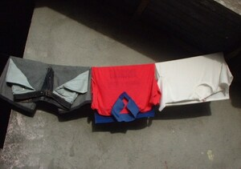

sampey 
/sampɔy/
v_rt.
“hang_out_laundry”
vt.
for someone (egsampey, agent, eg><ø-) to hang out laundry (igsampey, theme, ig><ø-) to dry on a rope or over a fence
Ka egsampey iyan ka egpakaplì wey egpabitin-bitin wey egpalampey te minsan nekey diyè te ampew te duma.
Igsampey ku ka me pinipian ku.
I hang out my laundry.
Igsampey kud te kuddè ka dinulan ku.
I will hang over the horse my load.
Igsampey e perem amey ku ka hari ku diyè te alad su nabelù sikandin kanami.
My father angry to us and he attempted to hang my younger brother over the fence.
Eng. hang out laundry; hang over
Tag. sampáy
Ceb. sampáy
Ilo.: salapáy
OCM: Garment Care (296)
Online dict status: -
Usage level: M
vt.
for something or someone (insampey, in-) hung up by someone or someone hung up something
Insampey ni Tetuk te pamanayen din ka kumbalè ne inluung din.
Tetuk hang over his shirt that he took off over his shoulder.
Tuluya nu ka insampey ne kumbalè dutu te igtepak su kenà ad eglibed.
Take the shirt with you which is hung up there in the river bank because I won’t go back there.
Eng. hung over; hung up
Ceb. gisampay
Online dict status: -
Usage level: F
adj.
(sinampey) a hanging clothes
Due sinampey ku ne me kumbalè due te liyu te baley.
I have a hanging clothes behind this house.
Eng. hanging
Ceb. sinampay
Online dict status: -
Usage level: M
v.
(egpasampayan, egpA><an-) to block someone on the way by someone
Eng. ambush; lie in wait wait to attack; attack unexpectedly; strike unespectedly; waylay
Ceb. atang
Ilo.: agpabúlod
OCM: Borrowing and Lending (426)
Online dict status: -
Usage level: M
Updated by: RJH,TME,QDL,RJH,RAA
Last updated: 10/Oct/2017
This page last updated: 03-Jan-2020
Copyright © 2009-2014, Matigsalug Language Christian Association, Inc